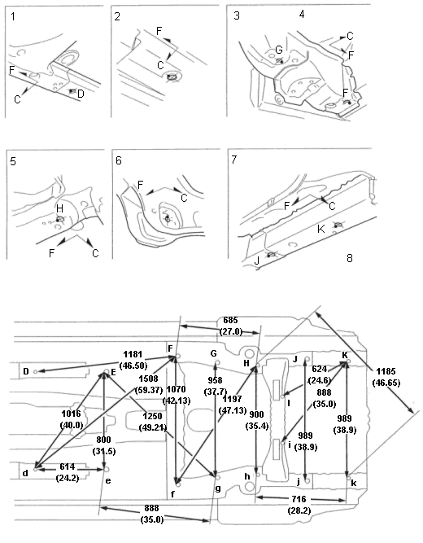

|
- D,d
Front Floor Frame Point 20 (0.79)
- E, e
Front Floor Point 25 (0.98)
- F, f
Rear Frame Extension Point 20 (0.79)
- G, g
Trailing arm Mount Holed 14 (0.55)
- H, h
Upper Arm Mount Hole 15 (0.59)
- I, I
Lower Arm Mount Hole 12.8 (0.5)
- J, j
Rear Frame A Point 20 (0.79)
- K, k
Rear Frame B Pint 15 (0.59)
|